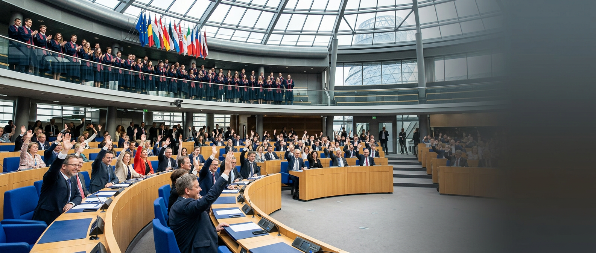

诺兰德时报 NORLAND TIMES
深度报道 · 公正视角 · 诺兰德权威新闻源
首页
新闻
政治
深度报道，公正视角
立足诺兰德，关注政治、教育与社会议题，为读者提供客观、深入的新闻报道。
最新报道

政治 · 教育
政府通过学生债务减免计划，数十万毕业生受益
2025年3月9日 · 阿尔维斯
科技 · 社会
虚拟伴侣技术为部分人群提供情感支持，研究显示积极影响
2025年3月9日 · 阿尔维斯